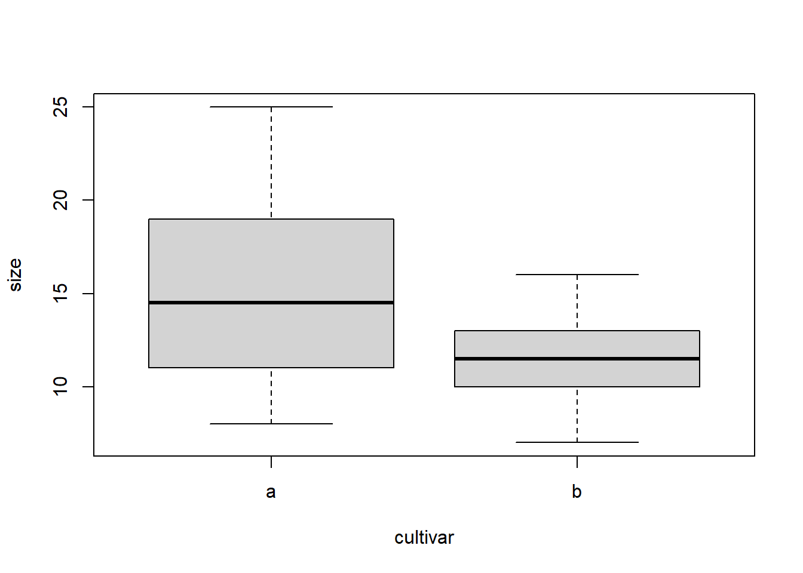
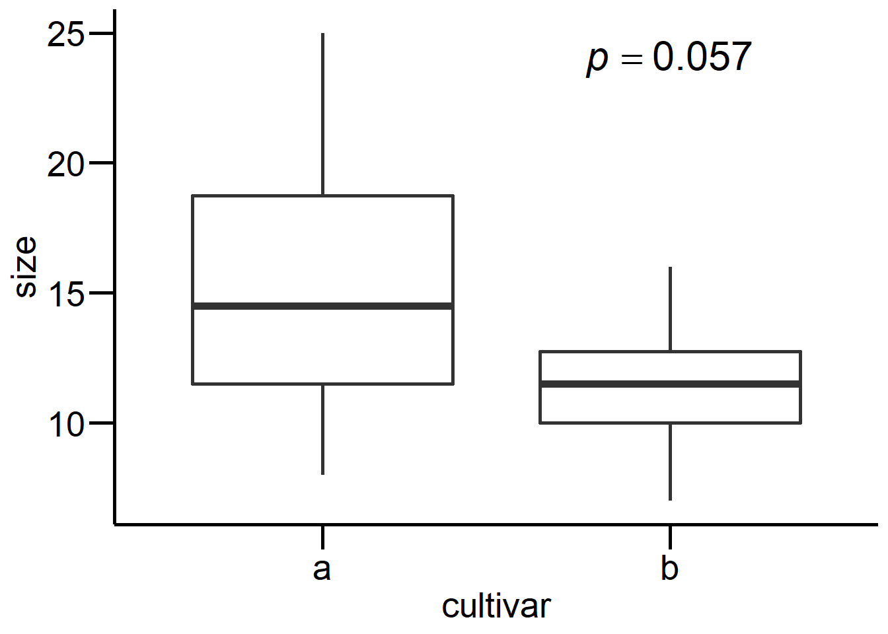

Stat1: Demo
Daten genereieren und anschauen
a <- c(20, 19, 25, 10, 8, 15, 13, 18, 11, 14)
b <- c(12, 15, 16, 7, 8, 10, 12, 11, 13, 10)
blume <- data.frame(a,b)
blume a b
1 20 12
2 19 15
3 25 16
4 10 7
5 8 8
6 15 10
7 13 12
8 18 11
9 11 13
10 14 10summary(blume) a b
Min. : 8.00 Min. : 7.00
1st Qu.:11.50 1st Qu.:10.00
Median :14.50 Median :11.50
Mean :15.30 Mean :11.40
3rd Qu.:18.75 3rd Qu.:12.75
Max. :25.00 Max. :16.00 boxplot(blume$a, blume$b)
boxplot(blume)
hist(blume$a)
hist(blume$b)


Zweiseitiger t-Test
t.test(blume$a, blume$b) # Zweiseitig "Test auf a ≠ b" (default)
Welch Two Sample t-test
data: blume$a and blume$b
t = 2.0797, df = 13.907, p-value = 0.05654
alternative hypothesis: true difference in means is not equal to 0
95 percent confidence interval:
-0.1245926 7.9245926
sample estimates:
mean of x mean of y
15.3 11.4 Einseitiger t-Test
t.test(blume$a, blume$b, alternative = "greater") # Einseitig "Test auf a > b"
Welch Two Sample t-test
data: blume$a and blume$b
t = 2.0797, df = 13.907, p-value = 0.02827
alternative hypothesis: true difference in means is greater than 0
95 percent confidence interval:
0.5954947 Inf
sample estimates:
mean of x mean of y
15.3 11.4 t.test(blume$a, blume$b, alternative = "less") # Einseitig "Test auf a < b"
Welch Two Sample t-test
data: blume$a and blume$b
t = 2.0797, df = 13.907, p-value = 0.9717
alternative hypothesis: true difference in means is less than 0
95 percent confidence interval:
-Inf 7.204505
sample estimates:
mean of x mean of y
15.3 11.4 Klassischer t-Test vs. Welch Test
# Varianzen gleich, klassischer t-Test
t.test(blume$a, blume$b, var.equal = TRUE)
Two Sample t-test
data: blume$a and blume$b
t = 2.0797, df = 18, p-value = 0.05212
alternative hypothesis: true difference in means is not equal to 0
95 percent confidence interval:
-0.03981237 7.83981237
sample estimates:
mean of x mean of y
15.3 11.4 # Varianzen ungleich, Welch's t-Test, der auch default Einstellung ist (siehe Titelzeile des R outputs)
t.test(blume$a, blume$b) # dasselbe wie var.equal = FALSE
Welch Two Sample t-test
data: blume$a and blume$b
t = 2.0797, df = 13.907, p-value = 0.05654
alternative hypothesis: true difference in means is not equal to 0
95 percent confidence interval:
-0.1245926 7.9245926
sample estimates:
mean of x mean of y
15.3 11.4 Gepaarter t-Test
# Gepaarter t-Test: erster Wert von a wird mit erstem Wert von
# b gepaart, zweiter Wert von a mit zweitem von b ect.
t.test(blume$a, blume$b, paired = T)
Paired t-test
data: blume$a and blume$b
t = 3.4821, df = 9, p-value = 0.006916
alternative hypothesis: true mean difference is not equal to 0
95 percent confidence interval:
1.366339 6.433661
sample estimates:
mean difference
3.9 t.test(blume$a, blume$b, paired = T, alternative = "greater")
Paired t-test
data: blume$a and blume$b
t = 3.4821, df = 9, p-value = 0.003458
alternative hypothesis: true mean difference is greater than 0
95 percent confidence interval:
1.846877 Inf
sample estimates:
mean difference
3.9 Das gleiche mit einem “long table”
cultivar <- c(rep("a", 10), rep("b", 10))
size <- c(a, b)
blume.long <- data.frame(cultivar, size)
rm(size) #Befehl rm entfernt die nicht mehr benötitgten Objekte aus dem Workspace
rm(cultivar)Das Gleiche in einer Zeile
blume.long <- data.frame(cultivar = c(rep("a", 10), rep("b", 10)), size = c(a, b))
summary(blume.long) cultivar size
Length:20 Min. : 7.00
Class :character 1st Qu.:10.00
Mode :character Median :12.50
Mean :13.35
3rd Qu.:15.25
Max. :25.00 head(blume.long) cultivar size
1 a 20
2 a 19
3 a 25
4 a 10
5 a 8
6 a 15boxplot(size~cultivar, data = blume.long)
t.test(size~cultivar, blume.long, var.equal = T)
Two Sample t-test
data: size by cultivar
t = 2.0797, df = 18, p-value = 0.05212
alternative hypothesis: true difference in means between group a and group b is not equal to 0
95 percent confidence interval:
-0.03981237 7.83981237
sample estimates:
mean in group a mean in group b
15.3 11.4 t.test(size~cultivar, blume.long, paired = T)
Paired t-test
data: size by cultivar
t = 3.4821, df = 9, p-value = 0.006916
alternative hypothesis: true mean difference is not equal to 0
95 percent confidence interval:
1.366339 6.433661
sample estimates:
mean difference
3.9 
Base R vs. ggplot2
library(tidyverse)
ggplot(blume.long, aes(cultivar, size)) + geom_boxplot()
ggplot(blume.long, aes(cultivar, size)) + geom_boxplot() + theme_classic()
ggplot(blume.long, aes(cultivar, size)) + geom_boxplot(size = 1) + theme_classic()+
theme(axis.line = element_line(size = 1)) + theme(axis.title = element_text(size = 14))+
theme(axis.text = element_text(size = 14))
ggplot(blume.long, aes(cultivar, size)) + geom_boxplot(size=1) + theme_classic()+
theme(axis.line = element_line(size = 1), axis.ticks = element_line(size = 1),
axis.text = element_text(size = 20), axis.title = element_text(size = 20))Definieren von mytheme mit allen gewünschten Settings, das man zu Beginn einer Sitzung einmal laden und dann immer wieder ausführen kann (statt des langen Codes)
mytheme <- theme_classic() +
theme(axis.line = element_line(color = "black", size=1),
axis.text = element_text(size = 20, color = "black"),
axis.title = element_text(size = 20, color = "black"),
axis.ticks = element_line(size = 1, color = "black"),
axis.ticks.length = unit(.5, "cm"))ggplot(blume.long, aes(cultivar, size)) +
geom_boxplot(size = 1) +
mytheme
t_test <- t.test(size~cultivar, blume.long)
ggplot(blume.long, aes(cultivar, size)) +
geom_boxplot(size = 1) +
mytheme +
annotate("text", x = "b", y = 24,
label = paste0("italic(p) == ", round(t_test$p.value, 3)), parse = TRUE, size = 8)
ggplot (blume.long, aes(cultivar,size)) +
geom_boxplot(size = 1) +
mytheme +
labs(x="Cultivar",y="Size (cm)")
Binomialtest
In Klammern übergibt man die Anzahl der Erfolge und die Stichprobengrösse
binom.test(84, 200) # Anzahl Frauen im Nationalrat (≙ 42.0 %; Stand 2019)
Exact binomial test
data: 84 and 200
number of successes = 84, number of trials = 200, p-value = 0.02813
alternative hypothesis: true probability of success is not equal to 0.5
95 percent confidence interval:
0.3507439 0.4916638
sample estimates:
probability of success
0.42 binom.test(116, 200) # Anzahl Männer im Nationalrat (≙ 58.0 %; Stand 2019)
Exact binomial test
data: 116 and 200
number of successes = 116, number of trials = 200, p-value = 0.02813
alternative hypothesis: true probability of success is not equal to 0.5
95 percent confidence interval:
0.5083362 0.6492561
sample estimates:
probability of success
0.58 binom.test(3, 7) # Anzahl Frauen im Bundesrat (≙ 42.9 %; Stand 2019)
Exact binomial test
data: 3 and 7
number of successes = 3, number of trials = 7, p-value = 1
alternative hypothesis: true probability of success is not equal to 0.5
95 percent confidence interval:
0.09898828 0.81594843
sample estimates:
probability of success
0.4285714 Chi-Quadrat-Test & Fishers Test
Ermitteln des kritischen Wertes
qchisq(0.95, 1)[1] 3.841459Direkter Test in R (dazu Werte als Matrix nötig)
count <- matrix(c(38, 14, 11, 51), nrow = 2)
count [,1] [,2]
[1,] 38 11
[2,] 14 51chisq.test(count)
Pearson's Chi-squared test with Yates' continuity correction
data: count
X-squared = 33.112, df = 1, p-value = 8.7e-09fisher.test(count)
Fisher's Exact Test for Count Data
data: count
p-value = 2.099e-09
alternative hypothesis: true odds ratio is not equal to 1
95 percent confidence interval:
4.746351 34.118920
sample estimates:
odds ratio
12.22697